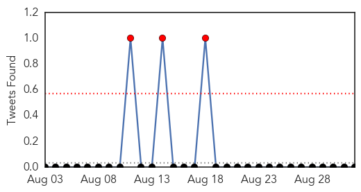
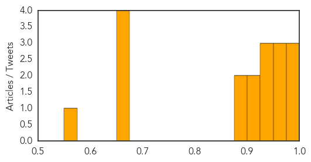
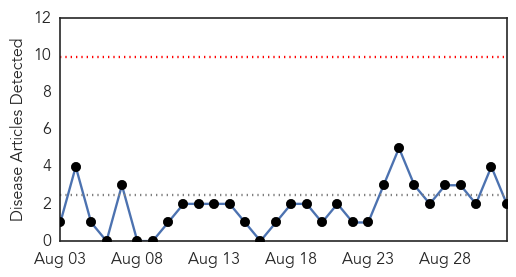
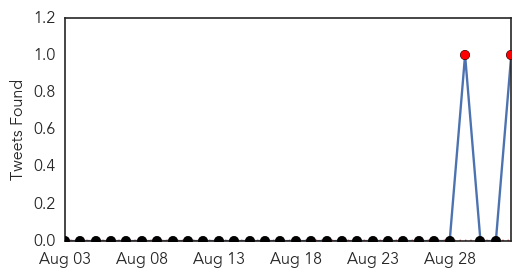
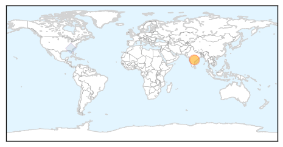
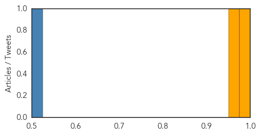

Dengue Fever
30-Day Web Trend
1 alerts, 0 warnings

30-Day Twitter Trend
3 alerts, 0 warnings

Article Locations

Article Confidences
Top Articles:
- 0.999
- How Dengue fever is spreading round the world
- 0.997
- U.N. Officials Warn of Dengue Outbreak in War-Torn Yemen
- 0.976
- Learn how to handle dengue
- 0.972
- Postpone non-critical surgeries but treat dengue patients, hospitals told
- 0.964
- Don't deny admission to dengue patients: Delhi Govt to hosps
- 0.963
- Don't deny admission to dengue patients: Delhi Govt to hospitals
- 0.939
- Civilians pay heavy price in Yemen's Taiz, health care collapses
- 0.933
- Civilians pay heavy price in Yemen's Taiz, health care collapses - UN
- 0.928
- Civilians pay heavy price in Yemen's Taiz, health care collapses: UN
- 0.924
- Civilians pay heavy price in Yemen's Taiz as health care collapses
- 0.916
- Civilians pay heavy price in Yemen's Taez, healthcare collapses
- 0.898
- Civilians pay heavy price in Yemen's Taiz, health care collapses: UN
- 0.898
- Dengue -- 778 cases in August alone, 831 in total
- 0.672
- Dengue control Call for making serious efforts
- 0.666
- CommonHealth
- 0.659
- Tehelka - Investigations, Latest News, Politics, Analysis, Blogs, Culture, Photos, Videos, Podcasts
- 0.658
- Adviser for enhancing dengue control, surveillance
- 0.553
- Dengue Cases on Rise in Delhi, Over 300 Cases Reported in a Week
Top Tweets:
- 0.596
- Flavivirus news: Number of dengue cases doubles in Cordillera - Rappler: RapplerNumber of dengu... http://t.co/K49eH8Mk5v pathogenposse
Swine Flu
30-Day Web Trend
0 alerts, 0 warnings

30-Day Twitter Trend
1 alerts, 0 warnings

Article Locations
Article Confidences
Top Articles:
Top Tweets:
- 0.753
- Confirmed H1N1v case reported to CDC. Learn more about swine flu viruses infecting people: http://t.co/sFpDlNstLH
- 0.718
- RT: Confirmed H1N1v case reported to CDC. Learn more about swine flu viruses infecting people: http://t.co/sFpDlNstLH